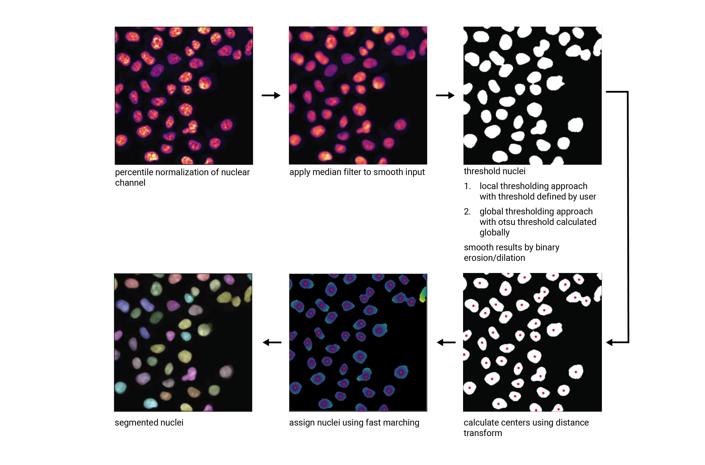
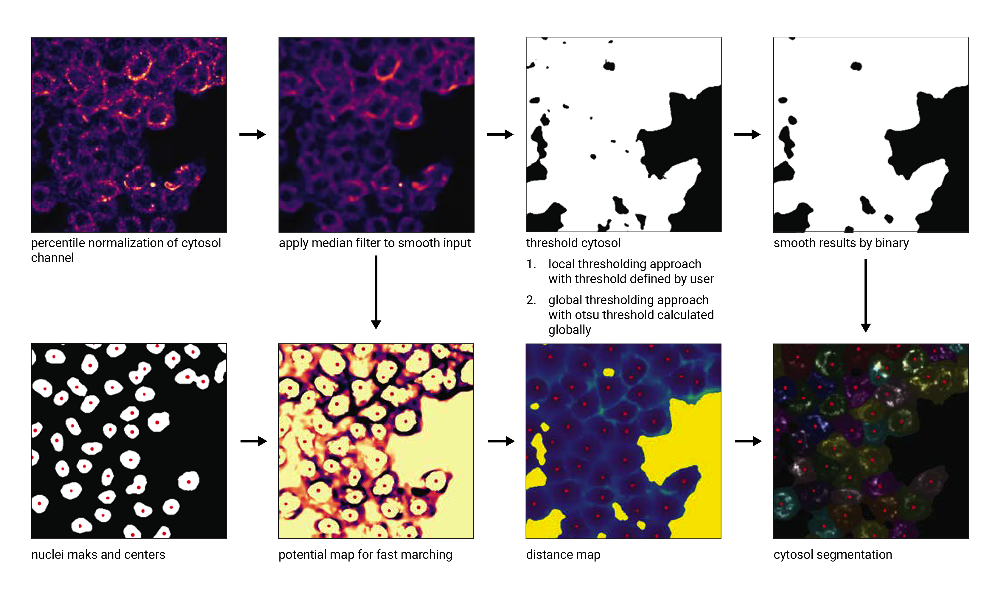

Segmentation#
Segmentation is an essential step in the scPortrait workflow. The goal of segmentation is to generate a mask which maps the pixels of the input image to individual cells, which are then assigned a unique cell id. Background pixels are assigned the value 0. In scPortrait we distinguish two different types of segmentation masks: nuclear and cytosolic. Nuclear masks <…> Cytosolic masks <…>.
Input Image |
Nucleus Mask |
Cytosol Mask |
|
|
|


To ensure overall flexibility, scPortrait seperates the segmentation code framework (i.e. loading input data, calling a segmentation method or saving results) from the actual segmentation algorithm (i.e. how the segmentation mask is calculated for a given input).
The segmentation code framework is implemented through so called segmentation classes. Each class is optimized for a given input data format and level of parallelization. The segmentation algorithms themselves are implemented by so called segmentation workflows. Each workflow implements a different segmentation algorithm (e.g. thresholding based segmentation or deep learning based segmentation).
Using class inheritance each segmentation workflow inherits from a segmentation class to provide the segmentation code framework, but updates the segmentation generation method with the desired algorithm. This way you can easily exchange one segmentation algorithm for another while retaining the rest of the code framework.
Segmentation classes#
scPortrait currently implements two different segmentation classes for each of the input data formats: a serialized segmentation class and a parallelized segmentation class. The serialized segmentation class is ideal for segmenting small input images on only one process. The parallelized segmentation classes can also process larger input images over multiple CPU cores.

1. Segmentation#
The Segmentation class is optimized for processing input images of the format CXY within the context of a base scPortrait Project. It loads the input image into memory and then segments the image using the provided segmentation workflow. The resulting segmentation mask is then saved to disk.
3. TimecourseSegmentation#
The TimecourseSegmentation class is optimized for processing input images of the format NCXY within the context of a scPortrait Timecourse Project. It loads the input images into memory and segments them sequentially using the provided segmentation workflow. The resulting segmentation masks are then saved to disk.
4. MultithreadedSegmentation#
The MultithreadedSegmentation class is an extension of the TimecourseSegmentation class and segments input images in the format NCYX in a parallelized fashion. The parallelization is achieved by splitting the input images along the N axis and processing each imagestack individually. The number of parallel processes can be specified by the user via the configuration file (threads).
Configuration parameters#
The following parameters for a multithreaded segmentation need to be specified in the configuration file:
MultithreadedSegmentationWorkflow:
threads: 2 # number of threads to be used for parallelized segmentation of shards
... additional workflow specific parameters...
Segmentation Workflows#
Within scPortrait a segmentation workflow refers to a specific segmentation algorithm that can be called by one of the segmentation classes described above. Currently the following segmentation workflows are available for each of the different segmentation classes. They are explained in more detail below:
If none of these segmentation approaches suit your particular needs you can easily implement your own workflow. In case you need help, please open a git issue.
WGA segmentation#
This segmentation workflow aims to segment mononucleated cells, i.e. cells that contain exactly one nucleus. Based on a nuclear stain and a cellmembrane stain, it first uses a thresholding approach to identify nuclei which are assumed to be the center of each cell. Then in a second step, the center of the identified nuclei are used as a starting point to generate a potential map using the cytosolic stain. This potential map is then used to segment the cytosol using a watershed approach. At the end of the workflow the user obtains both a nuclear and a cytosolic segmentation mask where each cytosol is matched to exactly one nucleus as kann be identified by the matching cell id.
This segmentation workflow is implemented to only run on the CPU. As such it can easily be scaled up to run on large datasets using parallel processing over multiple cores using either the ShardedSegmentation class or the MultithreadedSegmentation class respectively. However, it has a lot of parameters that need to be adjusted for different datasets to obtain an optimal segmentation.
WGASegmentation:
input_channels: 3
chunk_size: 50 # chunk size for chunked HDF5 storage. is needed for correct caching and high performance reading. should be left at 50.
lower_quantile_normalization: 0.001
upper_quantile_normalization: 0.999
median_filter_size: 4 # Size in pixels
nucleus_segmentation:
lower_quantile_normalization: 0.01 # quantile normalization of dapi channel before local tresholding. Strong normalization (0.05,0.95) can help with nuclear speckles.
upper_quantile_normalization: 0.99 # quantile normalization of dapi channel before local tresholding. Strong normalization (0.05,0.95) can help with nuclear speckles.
median_block: 41 # Size of pixel disk used for median, should be uneven
median_step: 4
threshold: 0.2 # threshold above which nucleus is detected, if not specified a global threshold is calcualted using otsu
min_distance: 8 # minimum distance between two nucleis in pixel
peak_footprint: 7 #
speckle_kernel: 9 # Erosion followed by Dilation to remove speckels, size in pixels, should be uneven
dilation: 0 # final dilation of pixel mask
min_size: 200 # minimum nucleus area in pixel
max_size: 5000 # maximum nucleus area in pixel
contact_filter: 0.5 # minimum nucleus contact with background
wga_segmentation:
threshold: 0.05 # threshold above which cytosol is detected, if not specified a global threshold is calcualted using otsu
lower_quantile_normalization: 0.01
upper_quantile_normalization: 0.99
erosion: 2 # erosion and dilation are used for speckle removal and shrinking / dilation
dilation: 7 # for no change in size choose erosion = dilation, for larger cells increase the mask erosion
min_clip: 0
max_clip: 0.2
min_size: 200
max_size: 30000
chunk_size: 50
Nucleus Segmentation Algorithm#
{kind=link}
Cytosol Segmentation Algorithm#
{kind=link}
DAPI segmentation#
This segmentation workflow aims to only segment nuclei. Based on a nuclear stain, it uses the same thresholding approach used during the WGA segmentation to identify nuclei. To ensure compatability with the downstream extraction workflow which assumes the presence of both a nuclear and a cytosolic segmentation mask the nuclear mask is duplicated and also used as the cytosolic mask. The generated single cell datasets using this segmentation method only focus on signals contained within the nuclear region.
DAPISegmentation:
input_channels: 3
chunk_size: 50 # chunk size for chunked HDF5 storage. is needed for correct caching and high performance reading. should be left at 50.
lower_quantile_normalization: 0.001
upper_quantile_normalization: 0.999
median_filter_size: 4 # Size in pixels
nucleus_segmentation:
lower_quantile_normalization: 0.01 # quantile normalization of dapi channel before local tresholding. Strong normalization (0.05,0.95) can help with nuclear speckles.
upper_quantile_normalization: 0.99 # quantile normalization of dapi channel before local tresholding. Strong normalization (0.05,0.95) can help with nuclear speckles.
median_block: 41 # Size of pixel disk used for median, should be uneven
median_step: 4
threshold: 0.2 # threshold above which nucleus is detected, if not specified a global threshold is calcualted using otsu
min_distance: 8 # minimum distance between two nucleis in pixel
peak_footprint: 7 #
speckle_kernel: 9 # Erosion followed by Dilation to remove speckels, size in pixels, should be uneven
dilation: 0 # final dilation of pixel mask
min_size: 200 # minimum nucleus area in pixel
max_size: 5000 # maximum nucleus area in pixel
contact_filter: 0.5 # minimum nucleus contact with background
chunk_size: 50
Nucleus Segmentation Algorithm#
Cytosol Cellpose segmentation#
This segmentation workflow is built around the cellular segmentation algorithm cellpose . Cellpose is a deep neural network with a U-net style architecture that was trained on large datasets of microscopy images of cells. It provides very accurate out of the box segmentation models for both nuclei and cytosols but also allows you to fine-tune models using your own data.
The scPortrait implementation of the cellpose segmenation algorithm allows you to perform both a nuclear and cytosolic segmentation and align the cellids between the two resulting masks. This means that the nucleus and the cytosol belonging to the same cell have the same cellids. Furthermore, it performs some filtering steps to remove the masks from multi-nucleated cells or those with only a nuclear or cytosolic mask. This ensures that only cells which show a normal physiology are retained for further analysis.
While this segmentation workflow is also capable of running on a CPU it is highly recommended to utilize a GPU for better performance.
If you utilize this segmentation workflow please also consider citing the cellpose paper.
ShardedCytosolSegmentationCellpose:
#segmentation class specific
input_channels: 2
output_masks: 2
shard_size: 120000000 # maxmimum number of pixel per tile
overlap_px: 100
chunk_size: 50 # chunk size for chunked HDF5 storage. is needed for correct caching and high performance reading. should be left at 50.
threads: 1 # number of shards / tiles segmented at the same size. should be adapted to the maximum amount allowed by memory.
cache: "/fs/pool/pool-mann-maedler-shared/temp"
#segmentation workflow specific
nGPUs: 2
lower_quantile_normalization: 0.001
upper_quantile_normalization: 0.999
median_filter_size: 6 # Size in pixels
nucleus_segmentation:
model: "nuclei"
cytosol_segmentation:
model: "cyto2"
chunk_size: 50
filtering_threshold: 0.95
DAPI Cellpose segmentation#
This segmentation workflow is also built around the cellular segmentation algorithm cellpose but only performs a nuclear segmentation. To ensure compatability with the downstream extraction workflow which assumes the presence of both a nuclear and a cytosolic segmentation mask the nuclear mask is duplicated and also used as the cytosolic mask. The generated single cell datasets using this segmentation method only focus on signals contained within the nuclear region.
As for the cytosol segmentation cellpose workflow it is highly recommended to utilize a GPU.
If you utilize this segmentation workflow please also consider citing the cellpose paper.
ShardedDAPISegmentationCellpose:
#segmentation class specific
input_channels: 2
output_masks: 2
shard_size: 120000000 # maxmimum number of pixel per tile
overlap_px: 100
chunk_size: 50 # chunk size for chunked HDF5 storage. is needed for correct caching and high performance reading. should be left at 50.
cache: "/fs/pool/pool-mann-maedler-shared/temp"
# segmentation workflow specific
nGPUs: 2
lower_quantile_normalization: 0.001
upper_quantile_normalization: 0.999
median_filter_size: 6 # Size in pixels
nucleus_segmentation:
model: "nuclei"